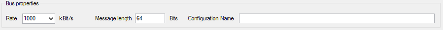

First, set the CAN bus properties in the ‘BUS properties' panel. Most important properties here are bus rate and message length. By default those properties are set to 1000 kBit/s for the rate and 64 bits (8 bytes) for the message length. Optionally, you can give a name to your configuration.

Created with the Personal Edition of HelpNDoc: Full-featured Kindle eBooks generator